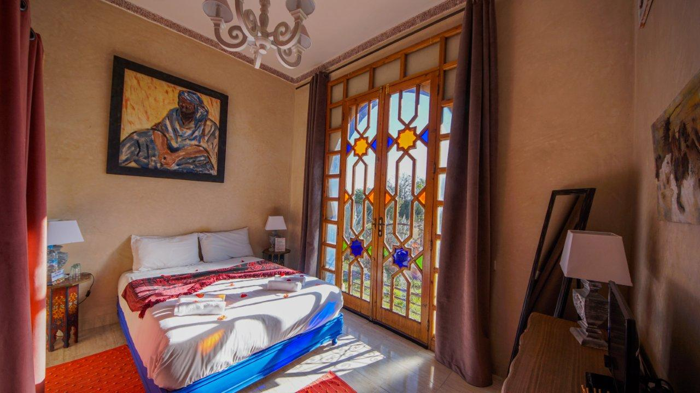
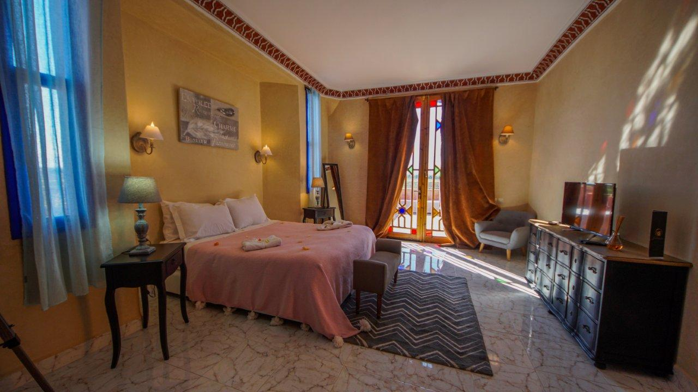
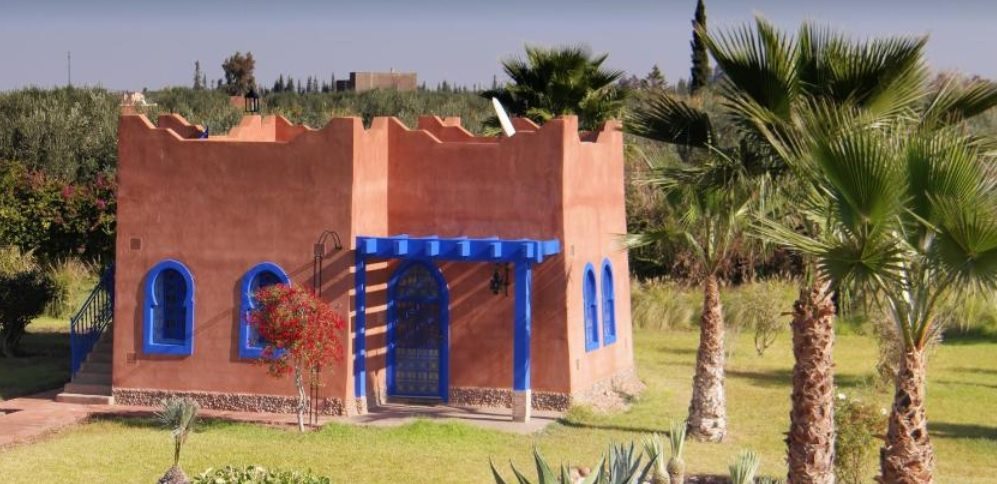

Riad (رياض) significa literalmente Jardín.
Es el nombre que reciben los amplios o espacios no techados dentro de una edificación.
Villa (فيلا) Casa con jardín en el campo, generalmente aislada de otras y
utilizada para pasar temporadas de descanso o de recreo.
Adobe (الطوب) Los ladrillos de adobe son parte de la arquitectura típica del sur de Marruecos.
Se crean a partir de la mezcla de arcilla, estiércol y paja y se dejan secar al sol.
Tienen un color arcilla típico que reviste todo el sur de marruecos.
El Riad Beloiseau es la mezcla de todo ello: una villa que simula el aspecto del Adobe, y que está rodeada de jardines con una construcción principal con jardin interior.
En esta villa celebraremos nuestra ceremonia y será el lugar donde todos nos alejaremos esa noche.
Vista aérea del Riad. Tuvimos que subirnos a una escalera muy alta para hacer la foto...
Está situado a 21km al sur de la ciudad de Marrakesh (unos 25 minutos en coche).
Cuenta con un amplio terreno de 1,5 hectáreas que podremos disfrutar en exclusiva.
Está en medio de una zona rural con muchos campos de cosecha y aldeas rurales que aún mantienen construcciones originales de adobe.
Es un lugar idílico con burritos, cabritas, casas de adobe y mucho, mucho cultivo.
Pues si la escalera de antes era alta...
Para más fotos y más información podéis cotillear la web del sitio.
Instalaciones
Una de las cosas que más nos gusta poderos decir es: ¡Podremos utilizar las instalaciones en exclusiva!
La villa está a nuestra total y entera disposición.
Todo esto incluye:
Una increible piscina que esperemos que el clima bendiga.
La sala principal del riad. Con rincones contrastados, decorados con muy buen gusto; con elementos tradicionales del lugar y decoración moderna.
Un patio interior que distribuye el acceso a las habitaciones del edificio principal y a las escaleras que llevan a las terrazas.
Y un montón de zonas ajardinadas.
Descubriréis rincones con mucho encanto...
...o algún que otro amiguito
Habitaciones
El Riad cuenta con 12 habitaciones con baño privado. Todas son muy amplias y luminosas. Decoradas con mucho acierto con decoración local.
Se dividen en dos grupos: las habitaciones de dentro del edificio principal y las habitaciones que se reparten por el jardin en pequeñas construcciones similares a un bungalow.
SONBOLA, OASIS Y ATLAS
Habitaciones dobles con baño privado y cama de matrimonio o dos camas.

TOUAREG
Habitación triple con dos espacios separados. Una cama de matrimonio y una individual que guardan privacidad entre ellas, pero comparten lavabo.
PEARL DU SUD Y KOUTUBIA
Son las habitaciones nupciales de la villa. Están arriba de todo, al lado de la terraza principal. Tienen dos estancias, una con una cama de matrimonio y otra con dos camas individuales. Son las más amplias y grandes.

KASBAH, WARDA, MAJORELL, WAD Y MELHA
Son los seis bungalows que hay repartidos por el Jardín. Tienen dos estancias diferenciadas, una con cama doble y las otras dos con camas individuales. Se pueden añadir camas extras y, de hecho, lo deberemos hacer en algún caso.

Asignacion de habitaciones
Como no queremos quitarle el sueño a nadie y puede que haya algún insomne por no saber
si le tocará un roncador o no, os pasamos la organización que tenemos actualmente.
La distribución de las habitaciones (y las mesas) es un pequeño y tortuoso rompecabezas que va cambiando
con cada nueva información que recibimos así que nada es definitivo hasta practicamente el día antes la boda.
Sonbola: Miriam y Erik.
Oasis: Mark, Ingrid y Ainara.
Atlas: Rita y Manel.
Touareg: Marc, Cris y Marta.
Pearl dü Sud: Los novios.
Koutubia: Susana, Jose, Franciso y Rosa.
Kasbah: Carmen, Juan, Dani y Elena.
Warda: Álex, Sara, Esther y Joan.
Majorell: Cris, Jordi, Dario y Alex F.
Beldy: Pedro, Vero, Abel y Xavi
Wad: David, Miriam, Noe y Sol
Melhà: Joaquin, Maria, Marta, Jose y Diego.
Reservado el derecho a modificación. Información no vinculable. No se aceptarán reclamaciones, ni devoluciones.
No nos responsabilizamos de los sonámbulos, ni de los que roncan, ni de si a alguien le huele un pie pero no el otro.